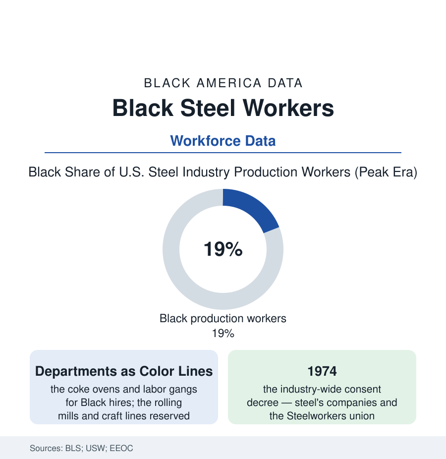

Black Employment
Steel: The Mill Floor Where the Consent Decree Was Invented
Black steelworkers were hired for the hottest, dirtiest departments and locked there by departmental seniority — until the 1974 decree rewrote the industry's rules. The steel file.

American steel was a Black industry in its hardest rooms and a closed one at its ladders: at the industry's mid-century peak, Black workers made up roughly a fifth of the production workforce in the Bureau of Labor Statistics' counts — hired into the coke plants, the blast-furnace labor gangs, and the yards, and held there for entire careers by a seniority architecture that made every department its own country. Steel is also where the legal remedy for that architecture was invented. This article reads the steel file. Every element of the pattern — the segregated entry, the seniority lock, the joint company-union defense, the federal remedy — would be studied afterward as the system's complete specimen.
The Department System
The mill's internal geography is documented in the personnel records and the litigation files: the entry portals sorted by race at the employment office — the labor department (the shoveling, the heat, the highest injury rates in the injury data) as the Black portal; the skilled sequence (the rolling mills, the finishing lines, the craft shops feeding the maintenance trades) as the white. The lock was not only the hiring foreman: it was departmental seniority, the union-contract rule under which seniority accrued within a department only, so a Black laborer with twenty years could transfer to a better room only by starting at its bottom, behind white men hired last spring — a rule neutral on its face and total in its effect, defended jointly by company and the United Steelworkers' locals for a generation. The wages wrote the consequence into the census: the steel wage was the North's industrial gold standard, and the Black steelworker's share of it was the standard's floor — the mill towns' Black middle classes (Gary's, Pittsburgh's, Birmingham's, Youngstown's in this atlas's city profiles) built on labor-department pay, real money beside the South's alternatives and a fraction, across a career, of the white mill hand's lifetime curve a wall away. The organizing tradition ran through it all the same — the Steelworkers' Black caucuses, the civil-rights locals, the wildcat tradition of the coke plants — the union card and the grievance both tools in hands the system's designers hadn't planned for.
The Decree and the Collapse
The remedy, when it came, remade the law's whole approach: after years of EEOC charges and Justice Department pattern-or-practice suits, the industry settled in 1974 with a consent decree covering the nine largest steel companies and the union itself — plant-wide seniority replacing the departmental lock, transfer rights with rate-retention, back pay in the tens of millions to the workers the system had held, and goals for the craft and supervisory lines — the template the aluminum, rubber, and auto decrees then followed, and still the industrial-desegregation literature's central case. The timing wrote the tragedy's familiar shape (the textile file's rhyme): the decree's first full decade was the industry's collapse decade — the import shock and the minimills, the great mill closings of the late seventies and eighties in the Mahoning Valley, the Mon Valley, and south Chicago's lakefront, the BLS steel curve falling by more than half — so the seniority the decree had just made portable was spent, for the senior Black steelworkers finally free to bid, largely on choosing which closing department to ride down, the younger ones scattered to the service economy the region offered instead. The file's residue is durable, though: the decree's doctrine lives in every seniority system in American industry, the Black steel towns' institutions carry the mill generation's stamp, and the pension and retiree-health data of the bankruptcies' aftermath (the PBGC takeovers, the legacy-cost litigation) run through Black retirees' households to this day — the last checks of the steel century still arriving in the mill wards' mail.
Reading the Steel Data
A fifth of the workforce, the worst of the heat, and the legal instrument that desegregated American industry: steel's file holds the employment section's whole argument in one plant — that the barrier was a design, that designs can be litigated, and that the calendar is a party to every remedy. The furnaces are mostly cold now. The decree is still warm law.
More in Black Employment
The Black Unemployment Rate: The Two-to-One Pattern
Black unemployment runs at roughly twice the White rate — 5.5 percent against 3.3 percent in annual averages — a ratio stable across five decades of federal data. How it is measured and why it persists.
Black Median Weekly Earnings: The 80-Cent Ratio
Black full-time workers earn a median of about $900 a week — roughly 80 cents for every dollar White workers earn. The BLS earnings data by group, gender, and occupation.
Black Labor Force Participation: Working at National Rates
Black labor force participation runs at roughly the national rate — and Black women participate at higher rates than White women. The BLS participation data.
Source: U.S. Bureau of Labor Statistics; United Steelworkers records; EEOC consent decree histories; National Bureau of Economic Research industry studies.